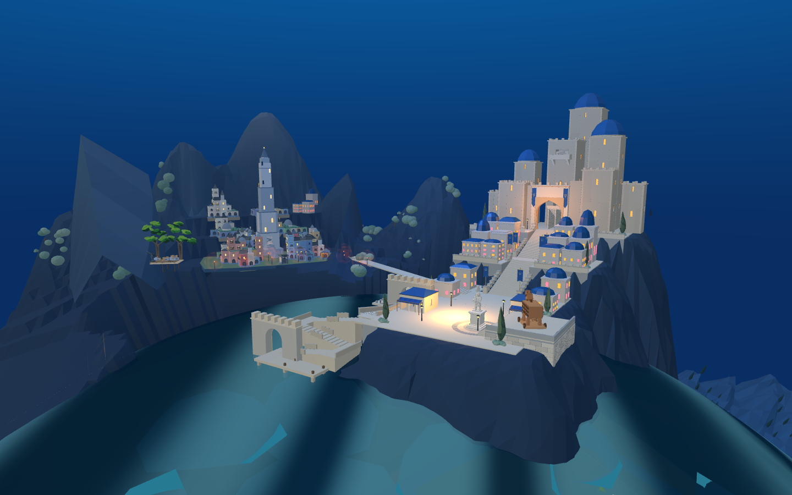
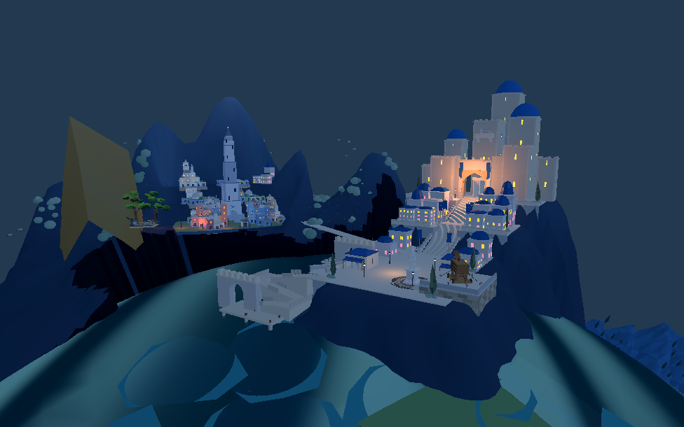

新旧城保持共同竖直方向，前港按真实球形海面重新构建。候选已进入原游戏和同一个 Godot 工程，但尚未替换默认布局。

广场最高角离水从约27米降至约10米；前港台阶总高度差从19.85米降到5.64米。主堡、雕像、原木马及两城之间的相对布局保留。

这一轮同时同步了候选建筑、地形、海面、海床、灯光和路线，未打开第二个项目。截图仍有明显的临水与海面显示缺陷，不能作为美术完成验收。
待完成：旧城港口到山城的高差、海面可见碎面、沿山建筑层次、完整战役和最终目标画面对照。因此默认入口没有切换到候选。
Web导出与通路记录 · 完整Godot场景行走 · 码头与海面验证 · 原作夜战出入验证